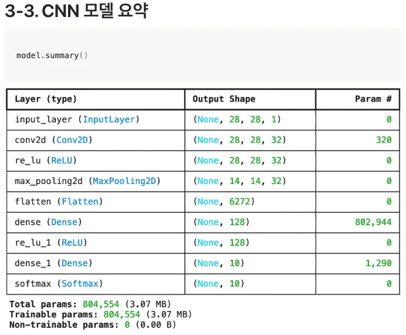
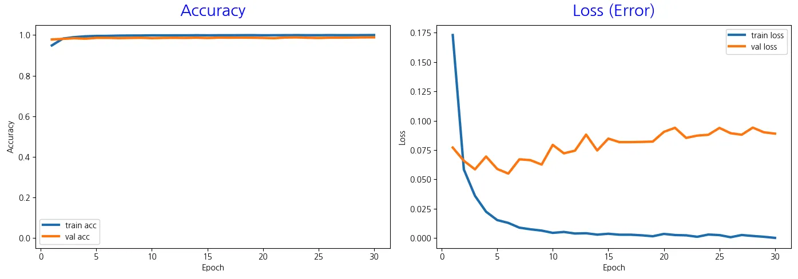
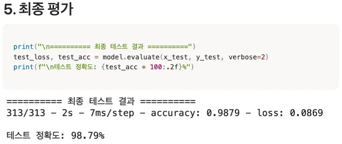

28×28×32 특성맵에 2×2 MaxPooling을 적용한 뒤 모양은 무엇일까요?
답을 고르면 바로 해설이 나타납니다.
Part 2 · CNN Practice
같은 28×28 숫자를 이번에는 펼치기 전에 3×3 필터로 살펴봅니다. 특징을 찾고 줄인 뒤 분류하는 CNN의 흐름을 노트북 코드로 연결합니다.
Code 01 / 10
운영체제·난수, 배열 계산, 딥러닝 모델, 한글 그래프를 담당하는 모듈을 준비합니다.
Code 02 / 10
같은 실험을 다시 실행했을 때 결과를 비교할 수 있도록 가중치 초기화와 데이터 처리에 쓰이는 난수를 고정합니다.
Code 03 / 10
학습용 이미지와 정답은 x_train, y_train, 마지막 시험용 이미지와 정답은 x_test, y_test에 들어갑니다.
Code 04 / 10
CNN의 입력은 높이·너비·채널의 3차원 데이터입니다. 따라서 이미지 60,000장의 모양은 (60000, 28, 28)에서 (60000, 28, 28, 1)로 바뀝니다. -1은 이미지 개수를 알아서 계산하라는 뜻입니다.
Code 05 / 10
입력의 크기를 맞춰 경사하강법이 안정적으로 움직이게 하는 과정은 MLP와 같습니다. 달라지는 것은 정규화 뒤에 이미지를 곧바로 펼치지 않고 합성곱층으로 보낸다는 점입니다.
Code 06 / 10 · Steps
Conv2D → MaxPooling → Flatten → Dense 순서로 강조를 이동하며 각 층이 바꾸는 데이터 모양을 확인합니다.
padding='same'은 28×28 크기를 유지합니다.Code 07 / 10
모델 구조는 달라졌지만 정답은 여전히 0~9의 정수입니다. 따라서 Adam과 sparse_categorical_crossentropy, accuracy 설정을 그대로 사용합니다.
Code 08 / 10 · Parameters · S77
합성곱층 자체보다 Flatten 뒤 Dense 층에 파라미터가 훨씬 많이 모여 있습니다.
모델 요약표를 이용해 합성곱 필터의 320개와 Flatten 뒤 Dense의 802,944개를 분리해서 계산합니다.
Conv2D 필터(3×3×1 + 1) × 32 =320
MaxPooling 뒤 모양14×14×32
Dense(128)6,272×128 + 128 =802,944
Dense(10)128×10 + 10 =1,290

| 구분 | MLP | CNN |
|---|---|---|
| 총 파라미터 | 101,770개 | 804,554개 |
| 첫 Dense 입력 | 784 | 6,272 |
| 특징 추출 합성곱 | 없음 | 320개 |
| Flatten 뒤 Dense | 100,480개 | 802,944개 |
CNN의 강점은 같은 필터가 이미지 전체를 훑는 파라미터 공유입니다. 이 간단한 모델에서는 Flatten 뒤 Dense가 커서 전체 수가 MLP보다 약 8배 많지만, 실제로 이미지를 보는 합성곱 부분은 320개뿐입니다.
Code 09 / 10
MLP와 같은 학습 조건을 사용하므로 결과 차이는 모델 구조에서 옵니다. history에는 epoch마다 train·validation의 정확도와 손실이 기록됩니다.
Code 10 / 10
학습 중 보지 않은 테스트 이미지로 최종 성능을 측정하고, 저장된 history에서 epoch별 기록을 꺼내 왼쪽에는 정확도, 오른쪽에는 손실을 그립니다.
Result · S79
313개 배치로 10,000장의 테스트 데이터를 평가한 실행 결과입니다.

Accuracy · S80
Train accuracy는 거의 1.0에 도달하지만 validation accuracy는 더 이상 크게 좋아지지 않아 두 곡선 사이의 간격이 유지됩니다.


Loss · S81
Train loss는 0에 가까워지지만 validation loss는 초반 최소점을 지난 뒤 증가하고 요동합니다. 모델이 훈련 데이터에 과도하게 확신하는 신호입니다.


Widget ⑥ · Placeholder
Quick Check
답을 고르면 바로 해설이 나타납니다.
답을 고르면 바로 해설이 나타납니다.